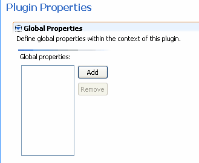

© copyright 2005, 2006, 2007 Cisco Systems, Inc. - All rights reserved
For all projects where your plug-in is deployed, the Global Properties defined for that plug-in are displayed as an option in the Generation section of your Tigerstripe Descriptor You can enter values for all defined plug-in properties in the Tigerstripe Editor. These values are passed to the context at runtime and are used in project templates to control behavior. The following list shows and example of project plug-ins:
There are currently two types of Global Properties that you can define:
Note: In the context, this will be a string with the value "true" or "false", and not a true boolean.
You add Global properties in the Properties section of the Plugin Project Descriptor. Complete the following procedure to create Global Properties.
- Click Add. The New Project Property dialog box displays

- Enter a property name in the Property Name text box. The name should be descriptive enough so that users of the plug-in will understand the purpose of the plug-in.
- Select the type of property in the Property Type drop-down list box. Your options are String or Boolean.
Once a property has been added to your plug-in, you can edit the property by highlighting it in the Global Properties list. There are two additional items for each plug-in property.
- Tool tip text This option allows you to enter a short discription of you plug-in that will display when the user of the plug-ins uses it.
- Default Value The option allows you to enter a default value for the plug-in.
To use Global Properties in a template, it is necessary to use the PluginRef object. ($pluginRef.Properties.getProperty(“propname”))
For more information on defining templates, refer to Creating and Editing Rules

© copyright 2005, 2006, 2007 Cisco Systems, Inc. - All rights reserved